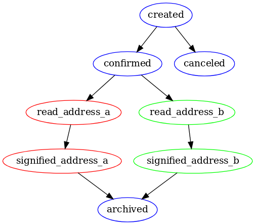

Mémoire
Sommaire
- A propos de moi
- Présentation de iSignif
- Planification
- Développement
A propos de moi
Développeur Ruby / PHP Passionné et autodidacte
Travaille actuellement chez Gac Technology
A côté de ça je suis:
- Associé chez iSignif SAS
- Proffesseur particulier chez Superprof
- Autheur du livre API on Rails 5 publié sur LeanPub (traduit en russe et vendu en 10 examplaires!!)
et d'autres trucs sur github.com/madeindjs et rubygems.org
Présentation de iSignif
SAS créée en décembre 2017
L'équipe
| Adrien ORION | cofondateur et directeur général |
|---|---|
| Sacha PARTENSKY | cofondateur et Président |
| Antoinne DELETTRE | associé et designer web |
| Alexandre ROUSSEAU | associé et directeur technique |
LegalTech qui a pour but de simplifier le processus de signification
Le Workflow de la signification

Stack technique
Wordpress- Ruby On Rails
- Vue.JS
- MariaDB
Planification
Méthode Kanban

Git et Git Flow
Développement
Test Driven Development

Beaucoup de tests fonctionnels pour la gestion des droits
test 'should show for connected user' do
login(@advocate)
get advocate_url(@advocate)
assert_response :success
end
test 'should forbid show user for other user' do
login(users(:one_other_advocate))
get advocate_url(@advocate)
assert_response :forbidden
end
Intégration de Stripe